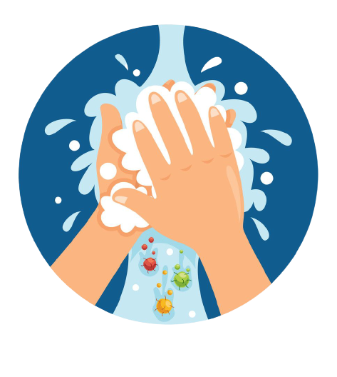

Tidak melakukan kontak fisik dengan orang lain (Selalu menjaga jarak)

Selalu mencuci tangan
Berikut adalah momen-momen yang dianjurkan untuk segera mencuci tangan Anda:
1. Sebelum makan
2. Sebelum menyiapkan makanan
3. Sesudah menggunakan toilet atau kamar mandi
4. Sebelum dan setelah menyentuh orang sakit
5. Setelah batuk atau bersin atau membuang ingus